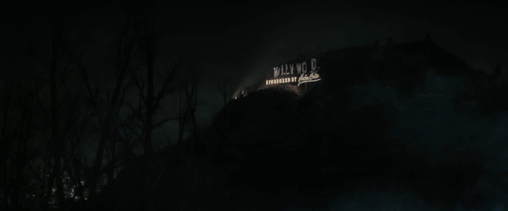

ハリウッドサイン
TVシリーズ ロケーション
LOCATION DATA

The Hollywood Sign is a location {{In|FOTV}}.
Background
The Hollywood Sign was originally erected in 1923 on Mount Lee near the California, where it initially spelled out "Hollywoodland" until later being shortened to "Hollywood." Since then, it became recognized as an iconic symbol of the district's global fame as an American entertainment hub. At some point in the 21st century, the Nuka-Cola Corporation secured sponsorship of the sign in return for the construction of a giant neon sign reading "Sponsored by Nuka-Cola" erected just below the sign itself.The Hollywood Sign and its corporate-sponsored subtitle lasted intact through the Great War and 219 years of exposure to the elements and wear and tear, with the electrical systems for its lighting rig remaining intact as well.
In the TV series
The Beginning
In 2296, shortly after Lee Moldaver activates her cold fusion reactor at Griffith Observatory to restore power to the ruins of Los Angeles, the resulting surge of electrical power reaches the Hollywood sign just after Lucy MacLean, the Ghoul, and CX404 exit an escape tunnel into Hollywood Forever, showing off the sign as still being intact as well as the name of its long-defunct corporate sponsorship.Gallery
References
{{References}}Category:Fallout TV series locations
Impression
（準備中）
（準備中）